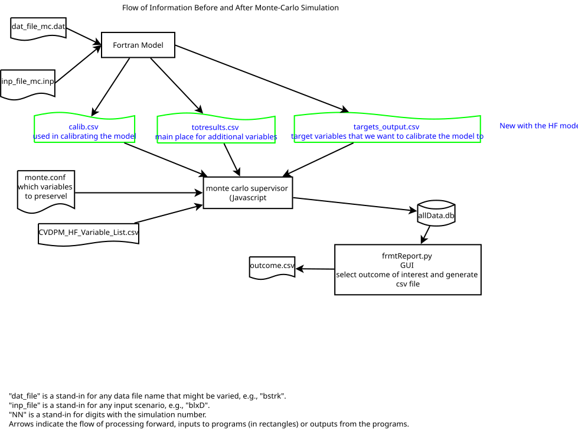

Version 4 of mccli uses new Fortran code for the Heart Failure model. As explained more fully in the User Guide, the older versions emited a bunch of human-friendly formatted files, which mccli processed using various Python programs. The new Fortran model continues to emit all those files, and we continue to process them exactly as before, at least for now. But the new code also emits 3 .csv files with all of the new and most of the old variables. The code developed here adds the ability to cope with this to mccli.
This file, v4.literate, is designed to be processed by the literate extension to Visual Studio Code. To work with it you will need to install VSCode and then, from within it, install the literate extension.
The diagrams for this and other documents were created with Dia; if you want to modify them, you will need to install it.
.literate files are in markdown format. That means they should be readable and editable as text files. It also means they can be nicely formatted; VSCode has commands that let you preview the results, and the preview will update as you make changes.
See Notes.md for much other information about the internal workings of the system, including fuller discussion of .literate files and the build procedures.
Outputs from running the command Literate: Process in VSCode will be a v4.html, the human friendly description of the program--perhaps what you are reading now--in this directory and code files in bin/js/. The output files appear below after fragment names that end in the literal .*, e.g., <<section name.*>>= ./bin/js/something.js.

The monte carlo supervisor repeatedly generates random input files for the model, runs the Fortran program to get their implications (i.e., output files), and processes the results. The code in this document concerns how it processes the new, .csv, output files introduced in version 4 of mccli and shown in the picture above.
The strategy is to piggy-back on a previously used method of storing results for many simulations by putting them in a database. We will use the same database, SQLite3, in the same format--same tables, column names and indices--as before. bin/python/frmtToData.py created such a database (from an entirely different set of inputs) and frmtReport.py, a GUI, read it to produce human friendly reports.
SQLite3 is a simple database: everything is stored in a single file and there is no separate database manager.
There are hundreds of variables in the 3 .csv files, which feature mostly non-overlapping sets of variables distinguished by their likely use. It is likely only a relatively limited set will be of interest and so there is a configuration file monte.conf that tells this program which variables from the .csv files to preserve in the database. The rest will be overwritten with each iteration.
The database also allows for variables to have fuller descriptions in addition to their names; CVDPM_HF_Variable_List.csv provides that information. It could potentially be used as a check or restriction on the variables in monte.conf, or even those in the .csv files (which include a header line with variable names) but we aren't doing that now. It might also provide a quick way to say which variables a given monte.conf had selected (since it can use patterns), but that's not a goal for the first round.
The old strategy, which remains active for now, was to make copies of each desired output file (and some input files) with iteration numbers appended to the file name. All the file copying and renaming came with some overhead since disk operations are slower than number-crunching. That overhead would presumably be even higher with the more extensive outputs of the new model.
There are a lot choices already embedded in the description above. The new Fortran code's output formats and names are already wired in, and changing them is likely to be slow. There would also be some advantages to doing the variable restrictions in Fortran so that it never even writes out (or computes?) variables that aren't needed. Likewise it might be preferable for the Fortran program to at least have an option to write output to a pipe so the receiving program could take it without it ever needing to touch the disk.
Turning to the code here, SQLite3 is far from the only choice of a data store, and it may yet prove to have sufficient problems with speed or disk space to merit a switch to something else. Initial testing has shown that it is not very space-efficient compared to pure binary storage of the results; adding information to the database seems to take about as much space as the original .csv files, perhaps because SQLite stores almost everything as a string.
But we provisionally take all those matters as given, and move to the first high-level choice.
Given that the existing code to work with the database is in Python and that most helper tasks are done by Python programs, not to mention the current author's familiarity and fondness for the language, it at first seemed the obvious choice.
However, using it would come at a cost. Our Python programs are mostly one-shot affairs. While this problem could be handled that way, it seems more natural and efficient to have a long-running task. And there are coordination problems: the Fortran outputs do not include the iteration number because the Fortran program has no idea it's in a monte carlo simulation. But the database requires a simulation number. So that informtion would have to get from the Javascript simulation supervisor to the process gathering input. And the program that collects the input has to tell the supervisor when it is safe to proceed with the next simulation.
So the end result seemed to be a lot of coordination problems, not to mention managing a long-running Python process.
All of which led me to decide, on balance, to keep these data gathering functions within the Javascript system that manages the simulations. Which, of course, came with its own set of problems (e.g., neither JavaScript nor Node seem to have a native "read one line of a file" command!).
There are 3 kinds of input files:
.csv files with the data, which will be written by the Fortran program and read by the code below repeatedlymonte.conf specifying which variables in which .csv files to preserve in the databaseCVDPM_HF_Variable_List.csv.The last 2 only need to be read once at the start, given the decision to have a persistent process managing the first.
We will divide the code into classes, with one for each kind of input. Reading the files is not too challenging, but the classes will also manage interpreting them as the data are processed.
There is one output file holding the database; the class that reads the .csv files is also responsible for writing to it.
JavaScriptJavaScript running under Node.js has 2 module systems, the original CommonJS used by Node.js and the newer and now standardized ES6 (ECMAScript v6), now also available in Node.js. Using them employs different syntaxes; modules built for one generally don't work in the other, and there are a host of differences in the semantics of each. The 2 coexist uneasily, and it's simplest to work with one or the other.
mccli was developed using CommonJS and most of the modules it uses are available in that form and may not be available as ES6. So this code will continue to use CommonJS modules.
That said, ES6 is probably the wave of the future, and modules are likely to be increasingly available in that format. One of the key modules mccli uses, inquirer, is only available in ES6 format for recent releases, leading this package to restrict it to earlier versions in package.json
Each file is a module, and it seems fairly conventional to put a class definition in a file so that importing the file creates the class.
I haven't been able to find a clear statement about namespaces for CommonJS modules, in particular whether a module needs to import (via require) a module already present in the parent. This discussion of [ES6] seems pretty clear that the import must be done within the module, saying that only global variables are accessible from the module. But aren't imported modules global vaiables?
At any rate, redundant imports should be cheap since the results are cached.
JavaScript now has a syntax for declaring classes, which we will use. However, JavaScript Objects are really all of the same type, and JavaScript itself barely has types: variables and functions are not declared with types.
JavaScript does have a prototype system in which one object--not class--serves as a prototype for another. The class system is actually just a syntactic gloss on prototypes.
TypeScript adds strong typing to JavaScript. Microsoft developed it and seems keen on it; for example, VSCode is written in TypeScript.
Node.js's fundamental execution model is asynchronous: function calls usually trigger some activity but return immediately, before it is done. This was done to enhance overall responsiveness, e.g., for web servers handling many separate requests. Many actions--getting a response from a remote user, accessing a local file, or querying a database--take some time to complete and that time can be spent doing something else.
Since mccli could in principle run multiple simulations simultaneously this seems like a natural fit. Unfortunately, the current design of the Fortran model, which has many hard-coded file names and locations, makes it very difficult to run more than one copy at a time. And many actions, such as creating a directory and then putting files in it, are inherently serial.
So mccli uses the synchronous version of a lot of calls, particularly file-oriented ones, and the overall design is synchronous. For example, one would not want to process the outputs of the Fortran program before it completes.
Practical implications:
JavaScript things may happen asynchronously unless you take special steps, like calling variant function names or using JavaScript's native sequencing constructs, to prevent it.JavaScript than in most other languages.Concretely, a data source is one particular named .csv file that holds data from a run of the Fortran model. In the future it may also be a particular named pipe whose contents are in the same format. This class collects all relevant information from all files about one of those data sources, and knows how to read the data source and store the relevant results.
This is the successor to the CSVConfig file in the next section, and roughly corresponds to the unnamed structure, often referenced by variables named cfg or cfg in the test code.
Almost all the configuration ends up in this object: the variable patterns in monte.conf, the codebook information, and the actual headers and columns of interest. Of course, only the subset relevant to a particular file type goes here. And if the data source is not mentioned in monte.conf the object is skipped entirely.
The information is built up in stages:
VariableConfiguration class reads monte.conf and creates a SimDataSource if it encounters the relevant section.VariableConfiguration informs SimDataSource of each pattern it finds.Codebook reads the relevant file and extracts the entries for each SimDataSource (if any) and informs SimDataSource of them.SimDataSource reads its main data input for the first time.
SimDataSource
const path = require('path');
These give the locations of fixed demographic columns. We could look them up each time, but the locations are fixed. If we wanted to be fancy we could put them in a prototype to be shared among instances.
The values are const but JavaScript does not permit that in a class definition.
The demographic columns are most of the index for the data values that go in the database.
Note there are 2 available columns with the year, one giving years since start of simulation and the other calendar year. The choice below is calendar year. Set year = 1 to get simulation years, which are 1-based (the two 1's are completely different uses).
age and sex use numeric codes; their interpretation is discussed elsewhere.
year = 0;
age = 2;
sex = 3;
.csv FilesdataPath = path.join(".", "outputs")
We start with only the file name from the monte.conf section header. At this point there may not be any actual output files to rely on. There are a number of design issues to consider.
It would be nice to convert filenames to a standard case to ease matching. But file systems vary in case sensitivity: some are case sensitive (Unix) while others aren't (MS-Windows usually, though it is case-preserving). A case-preserved name may fail to match the actual file name. See these useful notes on the vagaries of different file systems (which include both case and encoding) and how to handle them in Node.js.
We (almost) know the files will all end with a .csv, and so I originally said this could be omited. But if the file system is case-sensitive, adding .csv to the name won't work if the actual end is .CSV.
The simplest approach, programmatically, is simply to require the user to specify the file name, including the extension, in the appropriate case. The simplest approach for the user is for the program to work out the extension, and for that reason that was the original behavior of my test code and documentation in the User Guide. Despite the fact that adding .csv will work fine on MS-Windows, even if the real extension is .CSV, supporting it in general is a mess.
For now, we recommend providing the file extension and warn of possible problems if the real files don't end with lowercase .csv on case-sensitive file systems. This is asking a fair amount of the user since the real files don't even exist until the run starts. Also we are not requiring the user to know the directory they are in. Since they are produced by our Fortran code we should know the extension case, but the vagaries of different libraries and operating systems still imply some uncertainty about what we'll get.
monte.conf may include a section header that is incorrect--misspelled, or in the wrong case. As noted above, there may not be any real files to check at the start. We could just wait until their actual use proves impossible, but that seems annoying for the users. In the worst case the simulation would proceed and the absence of desired information would only be caught later. Instead, the program does a case insensitive match to the 3 possible legitimate values and reports an error immediately if it fails.
It is the responsibility of the code that creates an instance of this class to assure the name is valid.
To Do This will not catch case-only differences. Should they, or various other problems arise, we should abort the simulations, rather than letting the same error occur for each one.
This is instantiated while scanning monte.conf before the .csv files it describes have even been created. So the information in here is built up gradually: first the variable patterns of interest, then the specific variables and locations (columns) of those variables on first encounter with the data, and finally subsequent reads of the file will verify the columns match and pull out the data.
The argument is a filename including an extension. This class is responsible for knowing the path. basename is a string with the core name of the input, e.g, "totresults" and ifname is the full name, without the path, e.g., "totresults.csv". The latter is potentially case sensitive, depending on the underlying file system.
The private variables #patterns and #byvar must be "declared" before use to avoid the error "private field #xx must be declared in enclosing class".
#patterns;
#byvar;
constructor(basename, ifname) {
this.basename = basename.toLowerCase();
this.ifname = ifname;
this.ifpath = path.join(this.dataPath, ifname);
this.#patterns = new Map(); // identify variables of interest
this.#byvar = new Map(); // codebook, all variables
}
A # as the first character in a variable name make it private to the class, not accessible from outside.
#patterns holds individual patterns used to select variables to preserve in the database. The raw string is the key, and the RegExp derived from it is the value. The keys allow fast lookup for "patterns" that are simply variable names. They are removed when matched, meaning they can only be matched once. If none match, exhaustive search through the regex's is the only alternative.
#byvar will eventually have variable names as keys and a description as a value. That is built up later, when reading the codebook file. It includes all possible variables, not just those of interest.
In monte.conf a user specifies a list of variables, and patterns for variables, to preserve in the database. Here is where they are preserved. text is the plain text representation for the common case in which the "pattern" is just a variable name; regex is a regular expression object that corresponds to it.
We convert the key to lowercase to simplifying matching on it; this means the key may not match the case known to the user.
addPattern(text, regex) {
this.#patterns.set(text.toLowerCase(), regex);
}
addVarDescription(varname, description){
this.#byvar.set(varname.toLowerCase(), description);
}
Once the complete list of variables is loaded in #byvar we check that every pattern for an allowed variable matches the name of at least one actual variable. We work on a copy so that we can delete entries as an optimization.
The result of this function is a Map with regex's as keys and a value which is a count of the number of variables it matches and a list of concrete variable names.
countPatternMatches() {
let pats = new Map(this.#patterns); // so deletions don't affect original;
let result = new Map();
let myvar = new Set(...this.#byvar.keys());
const vs = [...pats]; // since we mutate pats
// first check for exact matches
for (const [txt, re] of vs) {
if (myvar.has(txt)) {
result.add(re, [1, [txt,]]);
pats.delete(txt);
myvar.delete(txt);
}
}
// now check all that remain against the regexps
// O(n^2) at least
const p2 = [...pats];
for (const [txt, re] of p2){
// myvar is a Set, and therefore doen't have a filter method
let matched = []; // all matching variable names
for (const v of myvar){
if (re.test(v)){
matched.push(v);
}
}
// safer to delete after iteration
// Set provide no set-level operator to remove members
// experimental difference operator creates a new Set,
// and is not currently in Node.js
matched.forEach(v=>myvar.delete(v));
// note we leave the pattern in pats
result.add(re, [matched.length, matched]);
}
return result;
}
One thing we can do with the result is to check if any patterns don't match any of the variables. Since that probably indicates a typo, we alert the user and stop.
The argument to the next function is the Map output by the previous function.
checkLostPatterns(counts){
let missing = [];
for (const xx of counts){
let re, [count, vs] = xx;
if (count==0)
missing.push(re);
}
if (missing.length == 0)
return;
console.log("The following patterns in monte.conf don't match any variables.");
error("Check for typos: "+missing.join(" "));
}
Finally, get the list of concrete variables that matched. Note that all such variables may not be in the .csv file, but it seems easier to test against this list the specification with regular expressions.
Returns a Set of variable names.
concreteVars(counts){
let result = new Set();
// likely the iterator will not support foreach
counts.values().forEach(([n, vs])=>vs.forEach(v=>result.add(v)));
return result;
}
<<SimDataSource.constants>> module.exports = class SimDataSource { <<SimDataSource.constructor>> <<SimDataSource.addPattern>> <<SimDataSource.addVariableWithDescription>> <<SimDataSource.countPatternMatches>> <<SimDataSource.checkLostPatterns>> <<SimDataSource.concreteVars>> }
monte.confThe first input file we consider is monte.conf which specifies which variables to preserve across simulations. It uses sections [filename] for the 3 possible .csv files and free-form (whitespace or , or mixes of them) list of patterns to match specific variable names. The patterns can be a variable name; a shell-glob style *stuff, stuff*, or *stuff* to match any variables ending, starting or containing stuff in the name; or a JavaScript regular expression. See the User Guide for the complete description.
All patterns get ^ added at the start and $ at the end, i.e., they must match the entire variable name and it is pointless to add those things in the input text. Similarly, do not include / at the start and end of the pattern.
* at the beginning or end is converted to .* to match the semantics given above, i.e., to convert from a shell glob to a regular expression. * in the middle is a regular expression quantifier.
The class's main job is to read in and parse the file and then, given a variable name, report whether it is of interest.
The rest of the system will only ask once for each variable name, which will permit some optimizations.
Here are some design decisions reflected in the current approach.
A missing monte.conf could mean to take all variables, ignore all variables, or use some pre-specified list of variables. At the moment, the system throws an error if the file is missing.
If monte.conf has no section for a particular file, all variables in that .csv file will be ignored.
JSONMany of the other input files to mc use JSON, and it would be possible to use it for this purpose to. That would have the potential advantage of re-using an existing configuration file.
The syntax struck me as unnessarily complex for the task, and so I use a standard .ini file approach.
Allowing [pathA/pathB/file] would provide extra flexibility, which could aid testing. However, the location is wired into the Fortran program and may not exist when the user is setting things up. This class does not know where the files are.
The specification does treat the .csv extension as optional in the section headers.
It might be helpful to users to be able to get a concrete list of the variables that monte.conf was picking out. For now, that's a possible future enhancement.
The input could just be a list of variable names since they are not expected to be duplicated across .csv files (except for the key identifiers). I left it this way because it seemed to fit better with the way the users thought of things. And it makes it easier to tell what .csv files can be skipped.
The matching procedure ignores case on the theory that differences in case are accidental and should not prevent a match.
VariableSelectorconst nReadLines = require("n-readlines");
<<VariableSelector.constants>>
module.exports = class VariableSelector {
<<VariableSelector.construct from configuration file>>
}
Define some patterns to help parsing the file.
I looked for the best way to include these in the class definition. static permits definitions to be done once, but they are not accessible from instances--or at least not accessible without prefixing them with the class name. Which would get tedious.
Second, one can not use const for a class instance attribute, though it has been proposed for ES7.
Apparently the "constants" get instantiated with each instance, and so there may be some overhead in making them (non-constant) instance attributes.
Another possibility is to define the constants at the module level. This should meet almost all requirements except strict inclusion in the class definition proper. That may be the best route. If they are not exported they will remain private.
const sectionRE = /\[\s*((?<full>(?<base>\S.*)(?<ext>\.csv))|(?<simple>\S.*)(?<=\S))\s*\]/i;
const sectionNames = new Set(["targets_output", "totresults", "calib"])
For sectionRE I tried /\[\s*(\S.*)(\.csv)?\s*\]/i but, because the first group is greedy it matched .csv and the 2nd group was always empty.
Filenames ending in .csv will match either side of the | in the sectionRE above, but it seems to match the first if it can. So if the filename ends in .csv it will match the 2nd capture group, otherwise the third.
const sepRE = /(\s*,\s*)|(\s+)/;
The separator regular expression will consider a,,c as having 3 fields, one of which is empty. An earlier version used the simpler /[,\s]+/, which would have treated a,,c as having 2 fields with ,, as a single separator.
We leave it to the caller to figure out where the configuration file is. And we retain, at least for now, the design from the test code in which results are stored in master. Ultimately I might want to keep them in this class, but since other information from other sources goes into master, including even the data structures built here, maybe it's OK as is.
nReadLines below is a reference to a module that is defined globally; I strongly suspect it will need to be defined in this module, but am trying without that definition as an experiment.
constructor(master, configfile) {
let i, line, match, csvname, base, ext, v, rawv, sds;
const reader = new nReadLines(configfile);
let sections = new Map();
master.sources = sections;
while (line=reader.next()) {
line = line.toString('ascii');
i = line.indexOf("#")
if (i==0)
continue;
if (i>0)
line = line.slice(0, i);
<<handle sections>>
<<handle pattern lists>>
};
};
Here we identify lines that are section headers and interpret those headers. Because of the final continue we move on to the next line, rather than falling through to pattern handling.
We check that the entry matches one of the 3 valid possibilities in sectionNames.
We do allow an optional .csv at the end of the name, adding it if it is absent. That may fail on case-sensitive file systems, typically Unix types (e.g., Linux, BSD, but generally not Macs). Case sensitivity is actually a property of a particular file system, not the operating system as a whole.
At the end csvname is set to the file name (not the full path) and master.csvs has a new entry.
if (match = line.match(sectionRE)){
csvname = match.groups.full;
if (csvname) {
base = match.group.base;
ext = match.group.ext;
} else {
base = match.group.simple;
if (! base)
error("monte.conf has an empty section heading.");
ext = ".csv";
csvname = base + ext;
}
if (!sectionNames.has(base.toLowerCase()))
error("monte.conf has section for ${base}. Unknown; expected one of ${sectionNames}.");
sds = new SimulationDataSource(base, csvname);
sections.set(base.toLowerCase(), sds);
continue;
};
Here we turn every pattern in the line into a regular expression and record it. This implements our special interpretation of * at the start or end as being like shell globs. And it requires that the pattern match the complete variable name, not just part of it, by prefixing it with ^ and suffixing with $. Matching specific variable names will be case insensitive.
This handles a single line; the pattern list may continue on additional lines.
Writes values to sds which was created when the section header was encountered, and which is already installed in master.sources.
for (rawv of line.split(sepRE)){
v = rawv
if (v.startsWith("*"))
v = "."+v
if (v.endsWith("*"))
v = v.slice(0, v.length-1)+".*"
sds.addPattern(rawv, new RegExp("^"+v+"[CONTENT]quot;, "i"));
}
This is for testing and may well be discarded when v4 is integrated into the regular processing in runSims.
// class definitions
const SimDataSource = require('./v4-SimDataSource'),
VariableSelector = require('./v4-VariableSelector');
module.exports = (yargs)=> {
let master = {};
let vs = new VariableSelector(master, './py_tests/monte.conf');
console.log(master.sources);
}